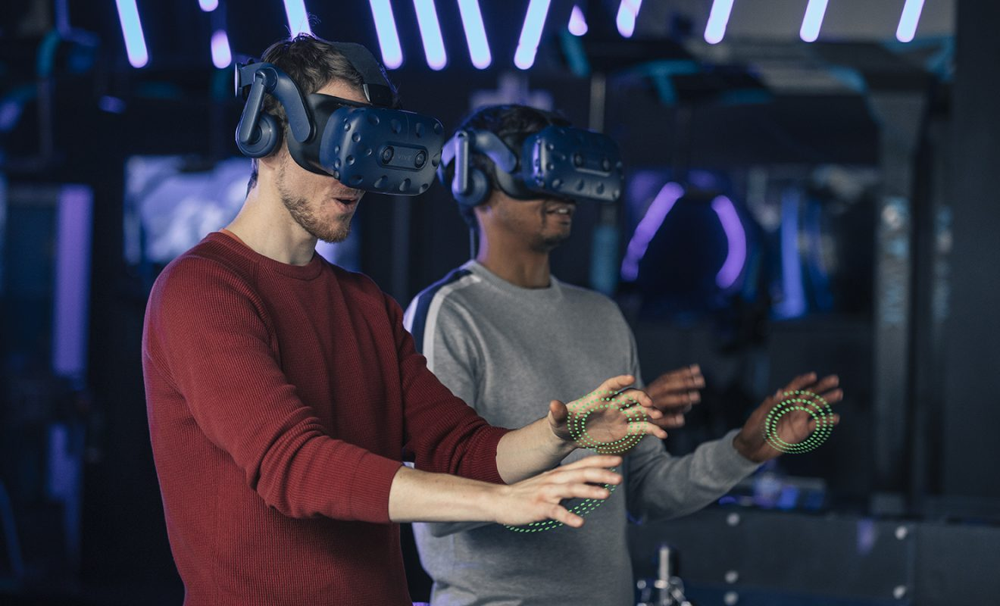

Virtual and Augmented Reality
FUTURE

Future Prospects
According to Jabil (2024), a global manufacturing company,
the prospects for virtual and augmented reality are promising as the market expands through headsets, tablets,
smartphones, wearables, and consoles. Furthermore, they stated that virtual and augmented reality technologies
will consolidate and emerge in two forms: tethered systems and standalone units.
Tethered systems will involve
a wearable device, such as a head-mounted unit, connected via wire to an external processing unit
Standalone units
will integrate all necessary components, including display and processing, directly into the wearable device.
Manufacturers are already adopting a mix of these approaches, although standalone units remain more complex and challenging
to implement. Currently, AR/VR devices are in a transitional phase, offering compromised experiences due to limitations like
narrow fields of view, low display resolution, reduced brightness, short battery life, and insufficient 3D sensing capabilities.
Experts anticipate it will take three to five years before we achieve truly unconstrained AR/VR applications. Early successes,
such as Pokémon Go, have demonstrated the potential of mobile AR, but this is merely a glimpse of what is possible. As extended
reality technologies and markets mature, we are likely to witness a significant platform shift. Future AR glasses, potentially
featuring LTE connectivity, could replace smartphones within the next few years, revolutionizing how we interact with technology.
With advances in immersive technology and AR capabilities, consumer electronics will undergo a transformation, enabling everyday
tasks like checking messages or browsing social media through augmented reality devices, fundamentally altering how we engage with
the digital world.
Click below to learn more.
Future Trends in VR and AR
The future of virtual reality (VR) and augmented reality (AR) is filled with possibilities for reshaping how we interact with the digital environment. As headgear, applications, and immersive experiences improve, VR and AR are gaining appeal in a variety of industries, including entertainment, education, healthcare, and productivity. In the following years, we may expect to see developing technologies, such as standalone AR glasses and high-resolution VR headsets, that will improve our reality through higher immersion, increased accessibility, and advanced AI integration. With big firms such as Meta, Apple, and Samsung pushing the frontiers, the VR and AR world is about to undergo a major changes, bringing new potential for both consumers and industries.
Below this section contains an exploration of the future trends in VR and AR technologies.
Information taken from
https://devtechnosys.com/insights/future-of-vr-and-ar/#:~:text=AR%20and%20VR%20are%20increasingly,and%20enhanced%20social%20interaction%20features.

AI in VR and AR Space
As the boundaries between technology and business continue to blur, the future of augmented reality (AR), virtual reality (VR), and artificial intelligence (AI) will drive new innovations across industries. AR, VR, and AI have already demonstrated their potential in the business world. However, in the future, AR/VR development companies or developers will focus on exploring the synergy between these technologies. They will investigate how advanced AI approaches and machine learning algorithms can help computers and devices understand and visualize data more effectively. This collaboration will likely lead to the creation of interactive workspaces that provide more immersive and intelligent experiences for businesses and consumers alike.

AI and ML Integration
The integration of AI and machine learning into AR and VR applications is reshaping the way users interact with these technologies. AI and machine learning algorithms are increasingly incorporated into VR/AR apps to enhance performance and user experience. The future of AR and VR may include AI-driven content creation, intelligent object recognition, personalized recommendations, and adaptive user interfaces. Such advancements will enable an interactive and dynamic virtual experience tailored to an individual’s behavior and preferences, making digital environments more intuitive and responsive to each user.
Immersive Social Experience
The rise of social interaction in virtual spaces is revolutionizing how people connect and communicate. AR and VR are increasingly being used to create an immersive social environment, allowing users to interact with others in a virtual space, regardless of their physical location. Future trends include improved voice, lifelike avatars, gesture recognition, and enhanced social interaction features. These innovations will make virtual gatherings feel more natural and engaging, transforming the way people interact in online spaces.

5G Integration
The integration of advanced technologies such as 5G is set to transform the AR and VR landscape. The 5G network promises to enhance the capabilities of AR and VR technologies, enabling users to enjoy high-definition and more responsive experiences with lower latency and faster data speeds. This will allow for real-time multiplayer gaming, complex AR applications, and streaming of 360-degree videos. As a result, businesses are advised to hire iPhone developers, who will help optimize apps for 5G’s low latency, create immersive experiences, and ensure device compatibility with VR/AR integration.
Healthcare And Wellness Application
The potential of AR and VR in the healthcare and wellness sectors is vast and continues to grow. For healthcare and wellness purposes, AR and VR technologies are being leveraged, offering solutions for virtual medical simulation, surgical training, physical rehabilitation, and mental health therapy. These immersive technologies provide a cost-effective and accessible way to improve healthcare delivery and patient outcomes, making treatment and training more effective. As these tools become more refined, they are set to revolutionize the way healthcare is delivered across various disciplines.